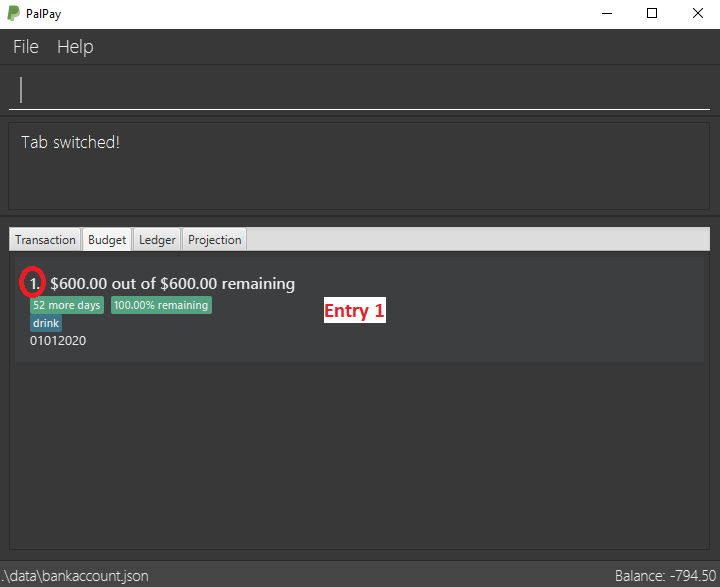
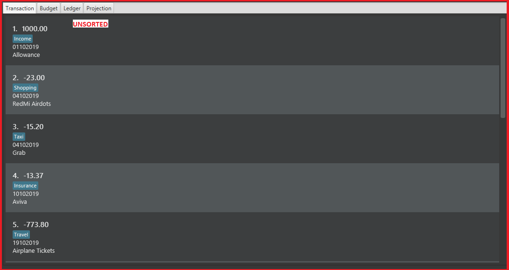
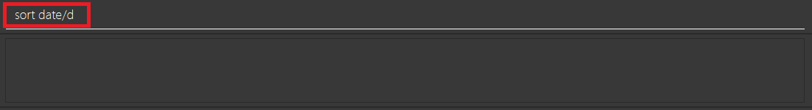

Overview
AddressBook - Level 3 is a desktop address book application used for teaching Software Engineering principles. The user interacts with it using a CLI, and it has a GUI created with JavaFX. It is written in Java, and has about 10 kLoC.
Summary of contributions
-
Major enhancement: added the ability to undo/redo previous commands
-
What it does: allows the user to undo all previous commands one at a time. Preceding undo commands can be reversed by using the redo command.
-
Justification: This feature improves the product significantly because a user can make mistakes in commands and the app should provide a convenient way to rectify them.
-
Highlights: This enhancement affects existing commands and commands to be added in future. It required an in-depth analysis of design alternatives. The implementation too was challenging as it required changes to existing commands.
-
Credits: {mention here if you reused any code/ideas from elsewhere or if a third-party library is heavily used in the feature so that a reader can make a more accurate judgement of how much effort went into the feature}
-
-
Minor enhancement: added a history command that allows the user to navigate to previous commands using up/down keys.
-
Code contributed: [Functional code] [Test code] {give links to collated code files}
-
Other contributions:
-
Project management:
-
Managed releases
v1.3-v1.5rc(3 releases) on GitHub
-
-
Enhancements to existing features:
-
Documentation:
-
Did cosmetic tweaks to existing contents of the User Guide: #14
-
-
Community:
-
Tools:
-
Integrated a third party library (Natty) to the project (#42)
-
Integrated a new Github plugin (CircleCI) to the team repo
-
-
{you can add/remove categories in the list above}
Contributions to the User Guide
Given below are sections I contributed to the User Guide. They showcase my ability to write documentation targeting end-users. |
Deleting Finance : delete
Deletes the specified Transaction, Budget, Ledger or Projection from PalPay.
Command Syntax
Format: delete TYPE+INDEX
PalPay deletes items based on the entry index of the target item. You can only delete a maximum of 1 entry per command. (i.e. delete t1 t2 b1 is not allowed)
Example Usage:
Deleting the 5th entry of the transactions list
-
Note the index of the entry you want to delete. In this example, entry 5 is the field we will be deleting.

-
Since we are deleting a Transaction entry of index 5, we will input
tinto ourTYPEfield and5into ourINDEXfield. -
Success message will be displayed upon successful deletion.
Example Commands:
-
delete t1 -
delete b3 -
delete l2 -
delete p4
Updating Finance : update
Did you make a mistake in one of your entries? Perhaps you over counted that expenditure you made. PalPay provides you with an update feature which helps you change specific fields within your entries.
Command Syntax
The update feature has different implementations for different entry types. The conditions for the update feature is as follows.
Format (Transactions): update TYPE+INDEX [$/AMOUNT] [d/DATE] [n/ITEM] [c/CATEGORY]
Format (Budget): update TYPE+INDEX [$/AMOUNT] [d/DATE] [c/CATEGORY]
Format (Ledger): Cannot be updated
Format (Projections): update TYPE+INDEX [d/DATE]
Important Details:
-
updaterequires at least one field to be updated but also allows more than one field to be updated (e.g.update t1 $/20 d/10102019 n/milkandupdate t1 $/10will both be accepted). -
Ledger does not have an update function. If you need to change specific fields within a ledger entry, you should delete the target entry and recreate a new ledger entry with your preferred fields.
-
You can not change an
intransaction to anouttransaction. -
Changing an expenditure with the same category field as a budget will reflect changes on the
Budgetas well.
Example Usage
Example 1:
Updating a Transaction entry.
-
Identify the index number of the entry you want to edit. In this case, we will be using entry 3.
-
Put
tas yourTYPEinput and key in the fields you want to change. In this case, we will only be changing the amount of the transaction. -
Success message will be displayed upon successful update. Fields will now be updated accordingly.

Example 2:
Updating a Budget entry.
-
Identify the index number of the entry you want to edit
 -
Put
bas yourTYPEinput and key in the fields you want to change. In this case, we will be changing both the date and amount of this Budget. -
Success message will be displayed upon successful update. Fields will now be updated accordingly.
Example Commands:
-
update t1 $/20 n/coke c/drinks d/12122019 -
update b2 $/300 -
update t4 $/30 d/12102019 -
update p4 d/10102019
Sorting Transactions : sort
Have you ever wonder which is the most expensive transaction you ever made?
Or which is the latest transaction you made? Fret not!
You can now sort your transactions according to date or amount.
Command Syntax
Format: sort PREDICATE/ORDER
Example Usage:
Do you want to know what is the latest transaction you made? No need to scroll all the way down anymore. PalPay has made it simple for you.
-
By default, your transactions are sorted from the earliest transaction you entered to the latest transaction you entered.
 -
Simply type sort date/d in the command box and press Enter.
 -
Great! You can now see the latest transactions you made.

Filtering Transactions : filter
Here at PalPay, you do not need to scroll through your history of transactions to find out what you spend two months ago.
PalPay gives you the power to filter your transactions to solve that problem.
Command Syntax
Format: filter [n/DESCRIPTION] [y/YEAR] [m/MONTH] [c/CATEGORY]…
Example Usage:
Imagine that you wanted to find out what you spent on shopping in October 2019.
-
By default, PalPay shows your all your transactions you have made.

-
Simply type filter c/Shopping m/10 y/2019 in the command box and press Enter.

-
You will now see the list of transactions you have made while shopping in October 2019. Hurray!

Undoing the Last Command : undo
Did you accidentally delete a transaction? Do not panic! PalPay lets you undo your previous commands with just one
word, undo.
Command Syntax
Format: undo
Example Usage:
Suppose you want to update your allowance you received in October 2019 to $800 but you accidentally update the GrabTaxi
ride instead. Without going through the trouble of updating the same transaction again, you can simply perform the
undo command. Just follow these three simple steps.
-
Here, you can see the wrong update you just made.
-
Simply type undo in the command box and press Enter.

-
As you wish, your command has been undone.

Redoing the Last Command : redo
Made an extra undo by mistake? Do not worry! PalPay lets you redo your previous undo(s) with just one word, redo.
Command Syntax
Format: redo
Example Usage:
Suppose you want to undo your last update but you accidentally undo twice instead.
You can simply perform the redo command to revert the changes. Just follow these three simple steps.
-
Here, you can see the extra undo you just made and the GrabTaxi ride is back at $800.

-
Simply type redo in the command box and press Enter.

-
Great! Your transaction is back to normal.

Clearing All Entries : clear
Do you want to start PalPay from a clean slate again? The clear command lets you do that!
Command Syntax
Format: clear
Listing All Entries : list
After filtering your transactions, you can use the list command to see all of your transactions in PalPay again.
Command Syntax
Format: list
Viewing Help : help
Did you forget how to use the in command? Fret not! You can easily find the link to this User Guide with the
help command. Simply copy and paste the URL into your browser to access our User Guide.
Exiting the Application : exit
Finishing using PalPay for the day? You can use the exit command to close PalPay.
Command Syntax
Format: exit
Saving the Data
PalPay data is saved in the hard disk automatically after any command that changes the data.
There is no need to save manually.
FAQ
Q: How do I transfer my data to another Computer?
A: Install the app in the other computer and overwrite the empty data file it creates with the file that contains the data of your previous Bank Account folder.
Command Summary
-
In :
in $/AMOUNT n/ITEM d/DATE [c/CATEGORY]
Example:in $/100 n/allowance d/11112019 c/income -
Out :
out $/AMOUNT n/ITEM d/DATE [c/CATEGORY]
Example:out $/20 n/coke d/19112019 c/drink c/lunch -
Set :
set $/AMOUNT d/DATE c/CATEGORY
Example:set $/100 d/10102019 c/food -
Split :
split $/AMOUNT n/NAME1 [n/NAME2]… [s/SHARE]…
Example:split $/100 n/Albert n/Bernard n/Clement s/2 s/1 s/7 -
Receive :
receive $/AMOUNT n/NAME
Example:receive $/20 n/Albert -
Project :
project DURATION
Example:project d/22072020 -
View :
view TAB
Example:view transaction -
Delete :
delete TYPE+INDEX
Example:delete t1 -
Update :
update TYPE+INDEX [$/AMOUNT] [d/date] [n/ITEM] [c/CATEGORY]
Example:update b1 $/100 c/transport -
Sort :
sort PREDICATE
Example:sort amount -
Filter :
filter [n/DESCRIPTION] [y/YEAR] [m/MONTH] [c/CATEGORY]…
Example:filter c/transport c/allowance y/2019 -
Undo :
undo -
Redo :
redo -
Clear :
clear -
List :
list -
Help :
help -
Exit :
exit
Contributions to the Developer Guide
Given below are sections I contributed to the Developer Guide. They showcase my ability to write technical documentation and the technical depth of my contributions to the project. |
Undo / Redo Command Feature: undo/redo
Current Implementation
The undo/redo mechanism is facilitated by VersionedUserState.
It extends UserState with an undo/redo history, stored internally as an userStateList and currentStatePointer.
Additionally, it implements the following operations:
-
VersionedUserState#commit()— Saves the current user state in its history. -
VersionedUserState#undo()— Restores the previous user state from its history. -
VersionedUserState#redo()— Restores a previously undone user state from its history.
These operations are exposed in the Model interface as Model#commitUserState(), Model#undoUserState()
and Model#redoUserState() respectively.
Given below is an example usage scenario and how the undo/redo mechanism behaves at each step.
Step 1. The user launches the application for the first time.
The VersionedUserState will be initialized with the initial user state, and the currentStatePointer
pointing to that single user state.
Step 2. The user executes delete t5 command to delete the 5th transaction in the transaction list.
The delete command calls Model#commitUserState(), causing the modified state of the user state after the
delete t5 command executes to be saved in the userStateList, and the currentStatePointer is shifted
to the newly inserted user state.
Step 3. The user executes in $/10 n/Allowance d/07112019 to log a new transaction.
The in command also calls Model#commitUserState(), causing another modified user state to be saved
into the userStateList.
If a command fails its execution, it will not call Model#commitUserState(), so the user state will
not be saved into the userStateList.
|
Step 4. The user now decides that logging the transaction was a mistake, and decides to undo that action by
executing the undo command. The undo command will call Model#undoUserState(), which will shift the
currentStatePointer once to the left, pointing it to the previous user state, and restores the user state
to that state.
If the currentStatePointer is at index 0, pointing to the initial user state, then there are no previous
user states to restore. The undo command uses Model#canUndoUserState() to check if this is the case.
If so, it will return an error to the user rather than attempting to perform the undo.
|
Step 5. The user then decides to execute the command list.
Commands that do not modify the user state, such as list, will usually not call Model#commitUserState(),
Model#undoUserState() or Model#redoUserState(). Thus, the userStateList remains unchanged.

Step 6. The user executes clear, which calls Model#commitUserState().
Since the currentStatePointer is not pointing at the end of the userStateList, all user states after
the currentStatePointer will be purged. We designed it this way because it no longer makes sense to redo the
in $/10 n/Allowance d/07112019 command. This is the behavior that most modern desktop applications follow.

The following sequence diagram shows how the undo operation works:

The lifeline for UndoCommand should end at the destroy marker (X) but due to a limitation of PlantUML,
the lifeline reaches the end of diagram.
|
The redo command does the opposite — it calls Model#redoUserState(), which shifts the currentStatePointer
once to the right, pointing to the previously undone state, and restores the user state to that state.
If the currentStatePointer is at index userStateList.size() - 1, pointing to the latest user state, then
there are no undone user states to restore. The redo command uses Model#canRedoUserState() to
check if this is the case. If so, it will return an error to the user rather than attempting to perform the redo.
|
Aspect: How Undo and Redo Executes
-
Alternative 1 (current choice): Saves the entire user state.
-
Pros: Easy to implement.
-
Cons: May have performance issues in terms of memory usage.
-
-
Alternative 2: Individual command knows how to undo/redo by itself.
-
Pros: Will use less memory (e.g. for
delete t1, just save the transaction being deleted). -
Cons: We must ensure that the implementation of each individual command are correct.
-
Aspect: Which Data Structure to Support the Undo/Redo Commands
-
Alternative 1 (current choice): Use a list and a pointer to store the history of user states.
-
Pros: Easy for new Computer Science student undergraduates to understand, who are likely to be the new incoming developers of our project.
-
Cons: Need to manage the list and pointer carefully as the pointer has to point to the correct position in the list at all times. For example, when a new command is executed, we must remember to update both
userStateListandcurrentStatePointer.
-
-
Alternative 2: Use two stacks. One stack stores the commands to undo and the other stores the commands to redo.
-
Pros: Do not need to manage a pointer for the stacks.
-
Cons: Need to manage both stacks carefully. For instance, when a command is popped from the undo stack, it needs to be pushed into the redo stack.
-
PROJECT: PowerPointLabs
{Optionally, you may include other projects in your portfolio.}